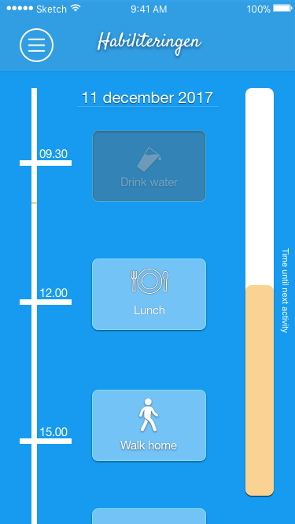
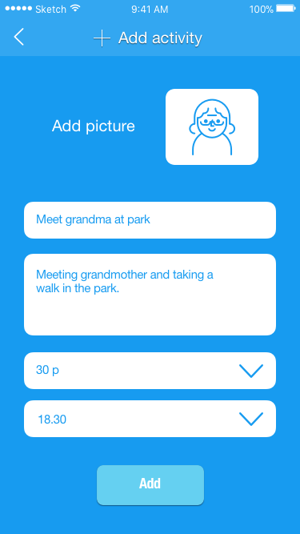

Project report
1. INTRODUCTION
Keeping track of daily routines such as eating lunch, doing chores and going to bed at a certain time may seem like simple tasks, for someone with autism spectrum disorder (ASD) that may not be the case. The symptoms of someone diagnosed with ASD may vary but common things are issues with executive functions especially with the working memory and being able to shift attention from one activity to another. (Russo et al., 2007). This becomes an issue for people with autism since our daily lives are filled with activities and challenges, and activities often shift from one to another in many areas such as our home, school or workplace. An activity change can mean uncertainty about what is happening next or that a learned routine is interrupted. (Flannery & Horner,1994; Mesibov, Shea, & Schopler, 2005).
Persons diagnosed with ASD is in need of clear and concrete instructions to avoid ambiguity. If only verbal instructions are given about ending an activity while different options about the next activity are presented, someone with ASD may have a hard time interpreting this information which can result in a feeling of reduced control followed by anxiety (Steingard et. al, 1997). To ease activity changes, transition strategies can create clarity and support change if the strategies are conducted prior, during and after an activity change with the purpose of creating a positive routine for activity changes using verbal and visual support (Simpson, Myles, & Ganz, 2000; Schmit, Alper, Raschke, & Ryndak, 2000).
Habiliteringen is a company that offers efforts to makes the daily life more functioning for someone with varying disabilities. Habiliteringen is the contact (client) of the project, and the target group is child and youth rehabilitation in Västerbottens Läns Landsting (VLL) where the most of them have the diagnose ASD. This group usually lives with their parents or family homes. Daily routines and eating habits vary, this group tend to spend a lot of time using a screen and needs help with ending and starting a new activity. The group does not feel isolated or experience any social alienation, however, their parents want them to spend more time with friends. The intention of this project is to create helpful discrete tools that can be used by someone diagnosed with autism spectrum disorder for such activities.
2. AIM AND RESEARCH QUESTIONS
The aim of the project is to prepare, support and guide adolescents with autism with daily activities. The goal is to help them prepare the end, actually end and start a new activity.
One of the key questions the group faces is how to motivate and make the youths understand the necessity of the actual activity, without punishment or stress. How to encourage and motivate someone to do a task? Also without making it just a traditional calendar, make a plan for the day or week. How to do so without stressing them out?
People with ASD are in need of clear direction. How to make the tasks as clear and obvious as possible for everyone to understand what is needed to be done?
Another challenge is the activity transitions, how is it possible to make the transitions as smooth as possible for everyone?
3. METHODS & REQUIREMENTS
The design process that we are going to use is divided into five steps. The first step is to define the problem, to see what the problem is and how it appears. The second step is to collect information about the problem. For the first and second step, we are going to collaborate with the occupational therapy students to get the information we need to proceed. Brainstorming an idea from the input from the occupational therapy students is the third step in the process. The fourth step is to develop the prototype based on the best idea. In the last step of the process, the prototype is tested on the occupational therapy students since we do not have access to the real target group. This process will be iterative.
We will not meet the stakeholders of the project because they are in another city.
3.1 Persona
We made personas from the information we received from the OT-students. Below you can read about a persona we made.
Karl Englund is a 17-year-old, computer loving student and lives with the cognitive disability autism (high functioning) which makes it easy for him to get stuck in activities. This makes him struggling to do the daily needs. His preferences in communication are through the computer by text.
3.2 Use Scenario
The use scenarios we are considering to analyze are mostly narrowed down to direct interactions between the user and a smartphone application. This smartphone application presents the user with a schedule and the rest of the environment should try to ensure he remains on schedule in a motivational way. In order to do this, we are planning to design a reward system. Then, when a sufficient amount of points is reached, the parents have the responsibility to reward him (go to the movies, choose the dinner on Friday night, some computer time, candies, …).
One of the key problems of these persons is that they often need clear instructions to realize something usually considered simple (cooking a meal or showering for example). The application for each activity should provide with clearly detailed instructions to help them understand why they need to do the activity.
Karl downloads the app to his smartphone and starts it. He makes a profile with his personal information. The app will then make an auto-generated schedule with the daily needs such as drink water, sleep, shower and other things you must do every day. Karl can also see his week plan in the menu in the app. The app is connected to different tools in his environment to help him. The app will give points to Karl for each completed activity, giving him additional motivation to complete the activities. The points can then be converted to different rewards for Karl.
Karl stays up late at night and plays computer games, which can make him forget time. The app and the environment will remind Karl to sleep. Twenty minutes before he needs to sleep, lights under the bed light up which helps remind him that is time to sleep. When it is time to go to bed, Karl also receives a notification on the app. The pressure sensor in the bed then feel that Karl has gone to bed and he receives the points in the morning, when he leaves his bed.
3.3 Requirements
The system developed should look reassuring, using a color scheme. Each day should have its own color, and each activity should be distinguishable by a symbol or picture and a short text label. The reward system should not be punishing (minus points) and not too linear as this might make the user bored out.
The user’s parents should also be able to feed important data, mainly an activity schedule, through the same application. If the user takes too much time to realize one activity, the systems should proactively warn the parents, providing information about the situation.
The app should present some accessibility functions, for example reading out loud an activity on the calendar.
The system should sense as automatically as possible that the user is doing an activity or another. He/she must remain identified as he/she lives with his family. For example, a motion sensor or a tile with a pressure sensor alone does not identify the user.
4. DESIGN SOLUTION
4.1. Interface
{kind=link}
{kind=link}
The front page and page with schedule. The color scheme is in the blue family, and the design is made to be as simple as possible. The time when the activity starts is on the left side and the timer on the right shows how much time is left till the next activity.
{kind=link}
{kind=link}
Here is the profile if you would press the hamburger menu, and on right is the description if you your press on an activity. The user can see some special info about the activity and how much points the activity is worth.
{kind=link}
{kind=link}
Here is a scenario of when a user would want to add an activity, they write the title, description, points and time. When the user clicks ‘add’ it shows up on the schedule.
4.2 Models
Here is a user model that can be deduced from the requirements and use scenario. The potential users are high-functioning autists, meaning they are able to do daily activities with little to none help and supervision, but their main problem is they tend to lose the sense of time, staying focused for too long in their activities.

We decided to focus on the sleeping and drinking activities. The blue circles represent smart agents, the green circles are sensors, and the yellow ones are notification media (actuators).
{kind=link}
The computer is an agent which runs the main application described in this report, interacting with the other agents. It also runs a daemon that monitors if there’s been active The server application could be useful to synchronize other users (parents), to store data and to produce statistics. In a real-life implementation, it would also prevent phone battery drain. We decided not to consider it in a detailed manner as it would add a considerable amount of technical issues to ponder (security, communication, cost, ...). It seemed still important to mention a way to synchronize the data among multiple users, which is more stable than running an application on the user’s computer or smartphone. These can be unpredictably subject to downtime or loss of data.
The smart chair and bed should use load cells to measure the weight and thus infer if the user is sitting or resting on them. The weight of the user should be input to the application, and the value sensed by the load cells should be in an acceptable range around this weight and should also takes in consideration the precision of the sensor given by its manufacturer. The smart chair is also equipped with an actuator that makes it vibrate, such as the mechanical systems found in massage chairs (motor).
The smart bottle is more challenging as one can compute the volume of water with its weight, but accurately sensing this weight is quite hard in practice. The volume can then be computed by multiplying the weight by the density of the liquid.

This example shows an adaptive behaviour of the system by choosing which media and device to send a reminder to. If he does not react, the system will try different ways of notifying him. In the long run, the system can choose which kind of media the user reacts to better depending on his situation and personal preferences (using the computer or not). The system can also by default take into account that the user has some physical disabilities (hearing, sight).
The social norms help to build the daily schedule of the user, which comes from a manual input from the parents. The user rewards should be tailored to motivate the user do the activities that are the most necessary and the user is less motivated to do. The user is rewarded differently depending on his reaction time, on how far behind (or ahead) he actually is from his schedule.
With sufficient data, it could be possible to adjust the number of points granted by the activities they seem to enjoy doing less in order to motivate them better to work on the areas where they tend to lack. However, this might lead them to forget the activities they previously learned by focusing too much on the activities they have not learned yet. A sufficient amount of exterior management is still needed and some thresholds should be defined to manage the balance of the whole system. The family could also access statistics to help them understand how they may help more efficiently.
It is also interesting to look further on activity switch patterns that seem to be more difficult for the user. Is switching from playing a videogame to eating more difficult than switching from exercising? If yes, then this first activity switch should be worth more points. The system could then adapt itself on the long run by tracking which activities switch patterns are the most difficult, depending on the time the user takes to do so.
The application collects data from the environment and uses a data-based Decision Tree model to choose the preferred notification medium. Indeed, the preferred media for each user can vary a lot from user to user and they may not know themselves what is their preference.
The different media available in the smart environment model and the two considered activities (sleeping and drinking) are:
- the lights (on the smart bottle for the drinking activity and on the smart bed for the sleeping activity)
- regular text notification through the smartphone
- vocal notification through the smartphone
- vibrations through the shaking chair
- regular text notification through the computer
- vocal notification through the computer (which diminishes the volume of other running applications on the PC)
This list is ordered starting from the least invasive to the most invasive medium considering the user is using his computer. Thus, this is the order used by the system before enough data is acquired about the user’s reactions. The order of the list changes depending on the potential physical conditions of the user. For example, if the user has a hearing impairment, the vocal notifications will first be ranked at the bottom. If the user is blind, the visual notification media will be totally ignored. Also, the smart chair vibrations could be skipped if the user is not sitting on it, sensed by its load cell sensor.
The Decision Tree classifier is modeled through several attributes, and here is an example of some data that could be acquired:
{kind=link}
A new row of data is added every time the user starts the new activity, saving the medium that triggered the activity switch. The notifications are triggered every time slice and ordered by their frequency in this model for each activity. The base time slice is 35 / 6 = 5 minutes, where 35 is a usually acceptable maximum late to start the next activity, and 6 is the number of different available notification media. This limit can be set in the application by the parents, as different people with ASD have different reaction speeds. This limit also depends on the activity, as it is preferable to start notifying the user to go to sleep early enough so he knows he has or has not the time to start a new game, video, or any other computer activity that usually has a minimum amount of time. However, for less restrictive activities such as drinking, the user does not need to be warned a long time in advance.
The system also saves the response time which is the difference between the scheduled time and the actual sensed time when the user starts the activity. This response time is used to determine which activity seems to be harder to do for the user and also which activity switches seem to be the hardest. For instance, for one user it might be harder to go to sleep if he was using his computer before than if he was eating instead. This could be stored in a structure containing the previous activity the user was doing, the planned activity that had to be started, and the timestamp of when the user actually started the activity.
Rewarding more points for hard activity switches should motivate the user to progress where he has more difficulties. The different activity switches and their difficulties can be then modeled by a directed graph, where each edge is weighted by the average response time of the user. The response time is the difference between the planned time of the activity in the schedule and the time the user actually started the activity. Here is an example of this graph, showing a few different activities and their hypothetical switch difficulties:
{kind=link}
The idea of this representation is to rank the possible upcoming activities by the difficulty for each activity (node). This ranking is based on the computed average response time.
This model is close to a Hidden Markov Model showing the probability of switching from one activity to another activity. In the case the user switches to another activity than the scheduled one, this HMM would work better. But in our case we assume the user respects to start the scheduled activity, at least for a minimum period of time for the system to learn his usual behaviour. If he starts another activity than the one planned, the notifications will continue until he starts the planned activity.
Thus, the score awarded by doing an activity should be based on:
- the importance of the activity to be realised,
- the difficulty the user seems to have to start the activity (difficulty of the activity to be done),
- the difficulty the user seems to have to end the previous activity (activity switch difficulty).
To answer these criteria for any activity, a general mathematical formula could be:
{kind=link}
where:
{kind=link}
- mP is a minimum amount of points awarded depending on the activity,
- tL is the maximum time limit used by the notification,
- pT is the planned time at which the user should start the activity,
- aT is the actual sensed time at which the user started the activity,
- SD is the activity switch difficulty is the rank number given to the switch by the previously described graph,
- And maxSD is the maximum rank value for the corresponding node (current activity).
The value of mP could be computed using the scheduled duration of the the activity, but this gets problematic to balance the amount of points awarded between important and healthy activities of highly different frequency and duration. Some activities take a very short time to do, such as drinking, and some other activities should be of a sufficiently long duration, such as sleeping. It could also stress out the user to force him, although gamers and some other specific profiles of users might be motivated by competition and performance.
Instead, the different values could be balanced so that each activity is worth the same amount of points in a day. For example, a popular general advice is to drink 8 glasses of 250mL of water a day. Then, the sleeping activity mP could be equal to 8 times the drinking activity, suggesting that drinking enough water throughout the day is as important going to bed at regular times.
The responseBonus() value increases the faster the user is to react to the notification. However, if the user takes more time than the maximum time limit tL, this bonus value would be negative. Yet, the point system should not deliver punishments as it would probably be less motivating. This ensures the number of awarded points will always at least be equal to mP. Also, this means the system should ignore activities done by the user before the first notification is sent, or the user could take advantage of this to generate huge amount of points by triggering the activities much earlier than their planned time.
The actual score values are rounded down to the nearest multiple of 5, as too much precision is irrelevant, especially for the user. The rewards are awarded by the parents and should be attainable at least once in a week. We can then compute the number of points required to obtain a reward depending on the schedule input by the parents and the previous formula, using the average response time sensed by the system as a value for aT. Without enough previous user data, it should use an actual time (value of aT) equal to the planned time multiplied by a constant 0.5 < c < 1. In both cases, the system should try to increment the required total amount of points of the new week if the user manages to reach the reward the week before, and. By varying the schedules from week to week, the system should not be easy to understand and taken advantage of.
5. PROTOTYPE TO BE PRESENTED ON JAN. 9
5.1 Material
The material consists of a sensor that reads voltage input and a lamp that reacts to digital output.
{kind=link}
The prototype solution we are presenting consists of a smart cup holder using a Force Sensitive Resistance sensor (Interlinks FSR 406). It measures an applied force between 2 and 20N, i.e approximately 0.2kg to 2kg, mapped to voltage values between 0 and 5V. The smart bottle would need to be wireless to communicate with the computer, which is hard to deal with. It would also need an external battery to power the sensors, whereas the cup holder can be plugged into the computer.
5.2 Test results
The sensor is not precise enough to measure the weight. Depending on where the pressure is applied on the sensor the voltage is different. The sensor could be more precise with some layer on top of it, such as a real cupholder, preferably with markings to help positioning the glass correctly. We tested the sensor with several bottles and some materials seem not to work at all on this sensor, but if the cup holder is made of a compatible material it should work with any bottle or glass.
The system also has to ignore the weight of the empty container. So the system should be calibrated every time the used container changes. If the container and its contents apply a force greater than 20N, then the obtained value is meaningless. Also, vibrations of the table can make the liquid move inside the bottle, thus change the applied force and small changes of voltage are observed. A threshold of value change has to be set to avoid considering these vibrations as a volume change.
All in all, this sensor in its current state is good enough to sense that the user takes, but its output is not stable and precise enough to infer the weight of a container placed on it.
5.3 Functioning explanation
The program running on the computer lights up the LED after some time (5s for the proof of concept), which corresponds to the drinking activity scheduled time. When the bottle is removed from the sensor, the program registers that the user is currently drinking. Finally, when the bottle is placed back on the sensor, the program computes the new timestamp for the next reminder (for the PoC, 5s after the bottle is placed back on the sensor).
6. ETHICAL CONSIDERATIONS
The project should consider ethical issues, such as the privacy and safety of the user group. It is not possible to monitor the user actually doing the activity because the goal is to make him learn how to do it by himself through guidance instead of surveillance. For instance, using a camera and image recognition in the bathroom to monitor that he is showering can be fearful for the user and prevent him from doing the task. This is especially an issue today with all the recent Internet of Things security flaws. The Mirai botnet that exploits public CCTV surveillance cameras and the website Insecam raised a lot of awareness about this issue. It could be useful to the system to use this kind of technology to recognize activities and to see how the user reacts when doing activities, and detect if he looks at his computer, or other relevant smart agents (bottle). But security aspects have to be thoroughly designed when using such technologies in private areas.
The guidance should not be too heavy either, as the project needs to have some lasting cognitive impact on the user. With time, he should be able to do the different activities with less and less guidance. But he still has the choice to access back to this guidance if needed.
Testing with the targeted user group will not be possible as they live in another city.
REFERENCES
Russo, N., Flanagan, T., Iarocci, G., Berringer, D., Zelazo, P. D., & Burack, J. A. (2007). Deconstructing executive deficits among persons with autism: Implications for cognitive neuroscience. Brain and cognition, 65(1), 77-86.
Flannery, K. B., & Horner, R. H. (1994). The relationship between predictability and problem behavior for students with severe disabilities. Journal of Behavioral Education, 4(2), 157-176.
Mesibov, G. B., Shea, V., & Schopler, E. (2005). The TEACCH approach to autism spectrum disorders. Springer Science & Business Media.
Steingard, R. J., Zimnitzky, B., DeMASO, D. R., Bauman, M. L., & Bucci, J. P. (1997). Sertraline treatment of transition-associated anxiety and agitation in children with autistic disorder. Journal of child and adolescent psychopharmacology, 7(1), 9-15.
Dettmer, S., Simpson, R. L., Myles, B. S., & Ganz, J. B. (2000). The use of visual supports to facilitate transitions of students with autism. Focus on Autism and Other Developmental Disabilities, 15(3), 163-169.
Schmit, J., Alper, S., Raschke, D., & Ryndak, D. (2000). Effects of using a photographic cueing package during routine school transitions with a child who has autism. Mental Retardation, 38(2), 131-137.
Documentation of Interlinks FSR 406 sensor: http://www.interlinkelectronics.com/FSR406